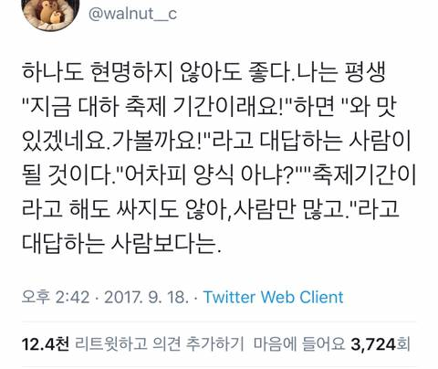
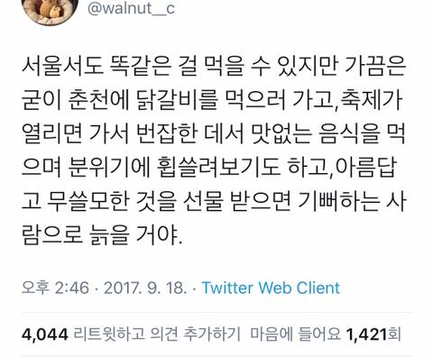

아니 네들 멱살잡고 지역축제 가라는 글이 아님
이 글은 댓글로서 완성된거임
뭐만 뜬다싶으면 새벽부터 가서 줄서는거 이해를 못했는데...
그러려니 해야지..받아들여야지..
노점상 사먹지 말기 이거 하나만 지켜도 지역축제 갈만함 대부분의 지역식당들이 사람이 많아져서 재료 순환이 빨라지고 갓나온 음식이 되서 아무 식당이나 들어가도 맛있음 식당 가는게 정답
ㅇㅇ 평소에 뇌 저전력모드 해놨다가 중요한 순간에만 풀로 켜주면 됨. 근데 그게 중요한 순간인지 아닌지 구분이 잘 안감ㅋㅋㅋㅋㅋ
ㅋㅋㅋㅋ
가고싶어서 가는 사람이 되어야지 가기싫은데 가는 사람이 되는건 아님
대하는 양식으로 먹어야지 어떤 미친놈이 자연산을 먹으려고 함?
대하가 양식이 됨? 대하=큰새우 한자라 흰다리새우 대하라 파는데 많잖아
근데 ㄹㅇ 대하라 불리던 대하는 양식 안되지 않음?
사실상 흰다리새우 먹으러가는거지...뭐
그래도 맛있잖아
아 그치 뭐 축제때는 수급 문제도 있으니 자연산 대하 못쓰지 양식 흰다리새우 갖다 팔겠지
그냥 첫 댓보고 궁금했음ㅋㅋ
양식 안됨 자연산 잡는 순간 다 뒤짐
살아있으먼 무조껀 흰다리임
여름엔 계곡 닭백숙이지!
현실에서까지 쿨찐들과 어울리고 싶진 않지
어 안가~
주차스트레스
사람많은거 스트레스
절대안감